“Per ottenere qualcosa che non hai, devi fare qualcosa che non hai mai fatto.”
Una citazione di Mirko Martorana
Sono Lorenzo Devicienti. Mi occupo di fotografia, graphic design, video editing e siti web. Social Media Manager di AtleticProgettoMontagna, fondatore di Dsgn.pop.
Guarda i lavoriLavori selezionati
01FotografiaAtleticProgettoMontagna · Felina F.C. · Ritratti50 foto 02GraficaLocandine partite APM · Dsgn.pop10 post 03Video editingMarcus Thuram, video brevePensato per TikTok 04Siti webAGLF · Castelnovo ne’ Monti · Casina · Villa Minozzo4 siti
01 — Fotografia
Fotografia
Seconda stagione come Social Media Manager di AtleticProgettoMontagna, fotografando le partite. Un torneo estivo con la Felina F.C. E i ritratti delle persone che ho intorno, una cosa che amo fare.


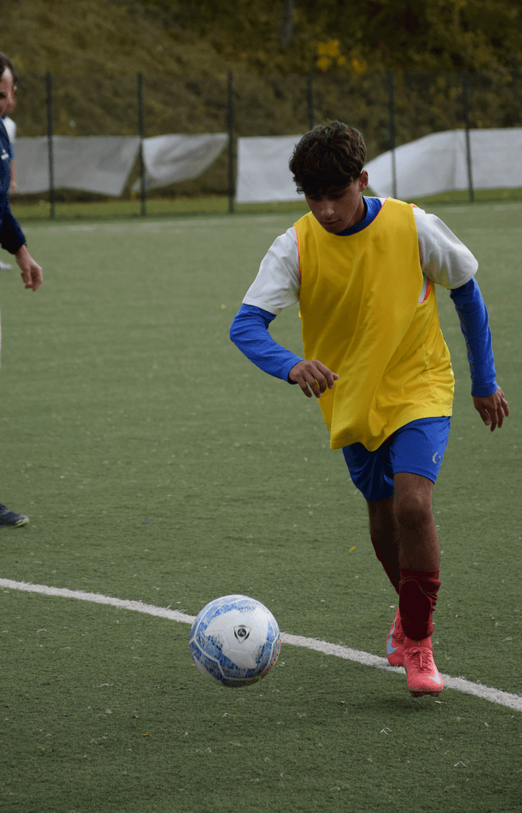
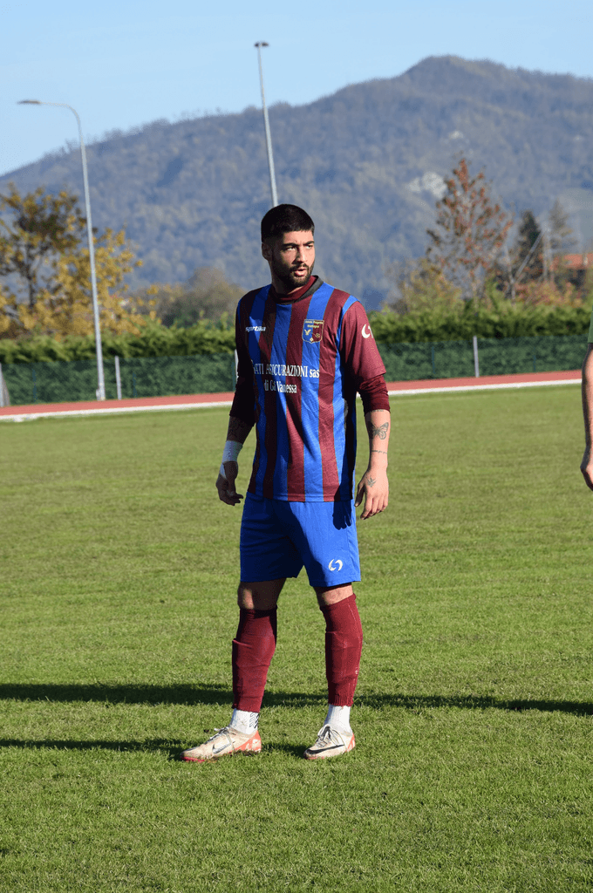


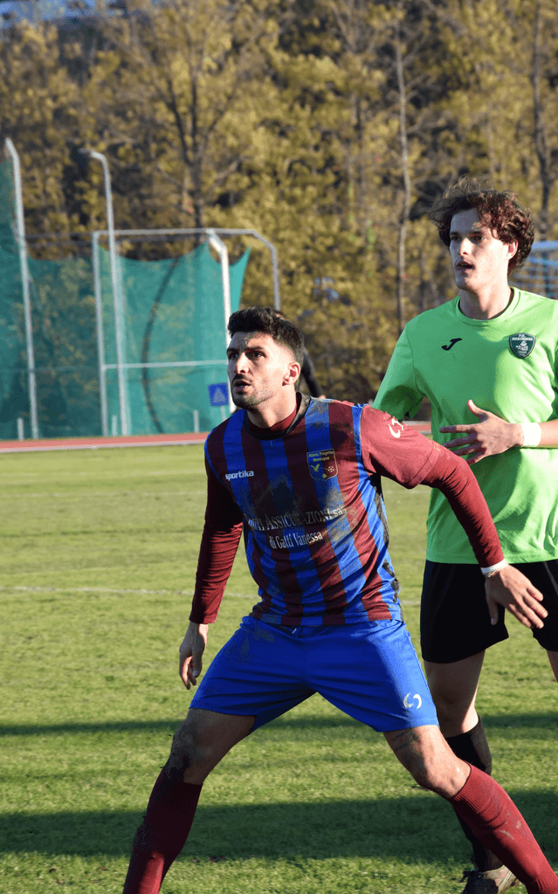

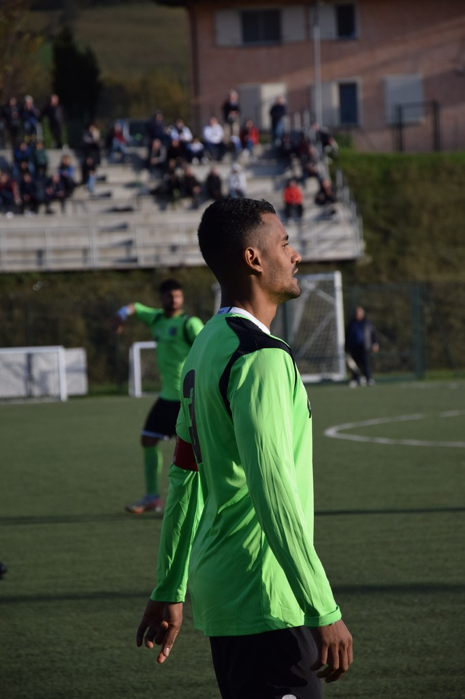


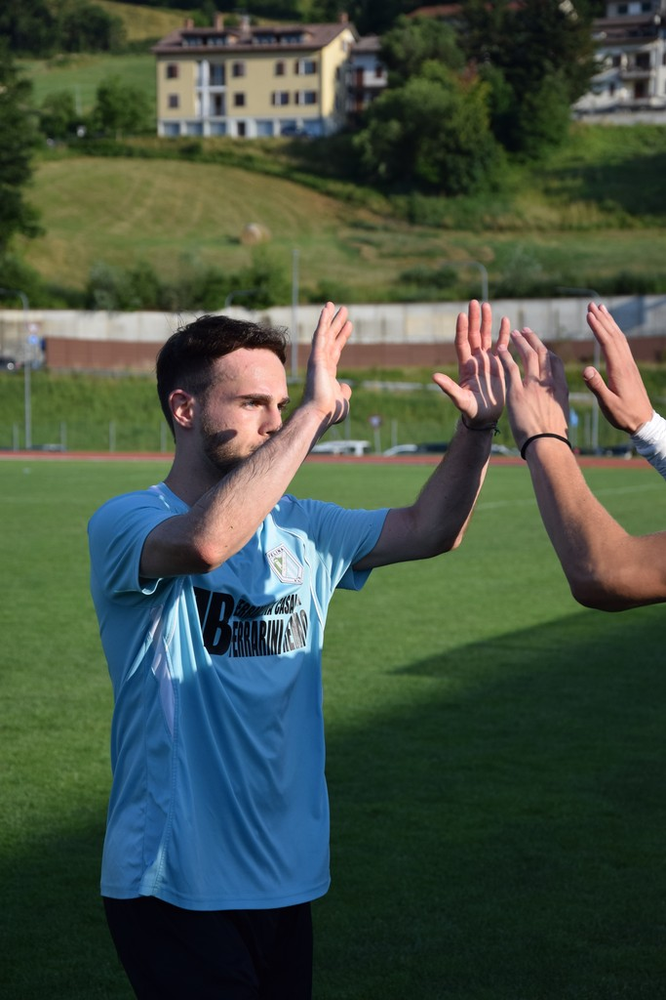
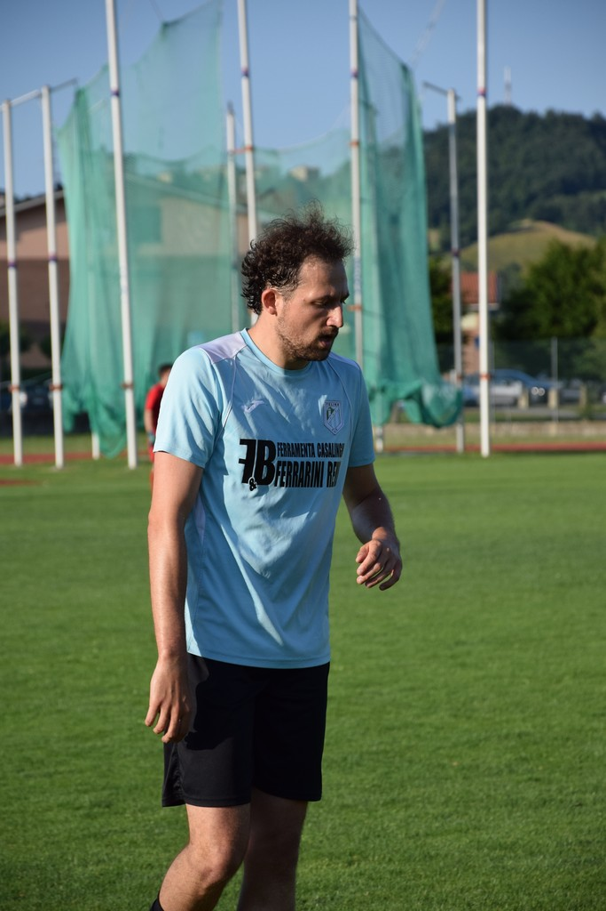
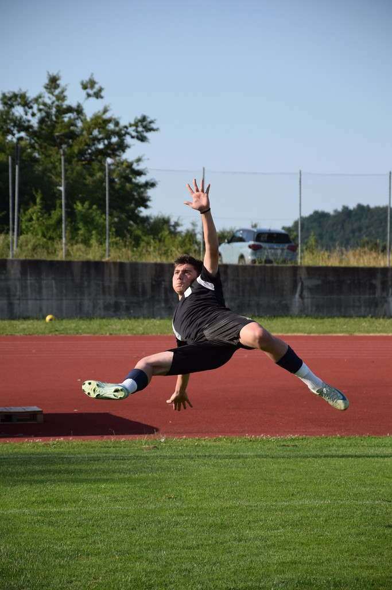


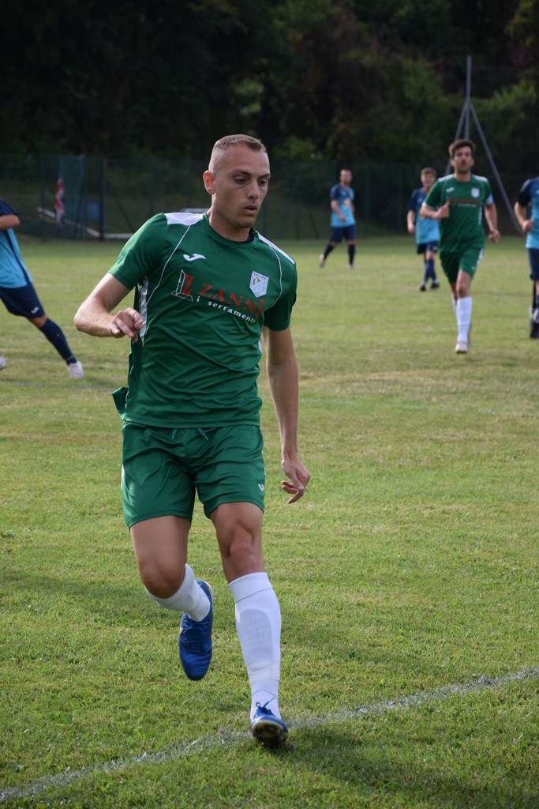


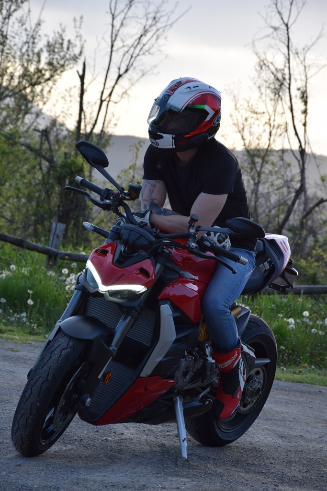


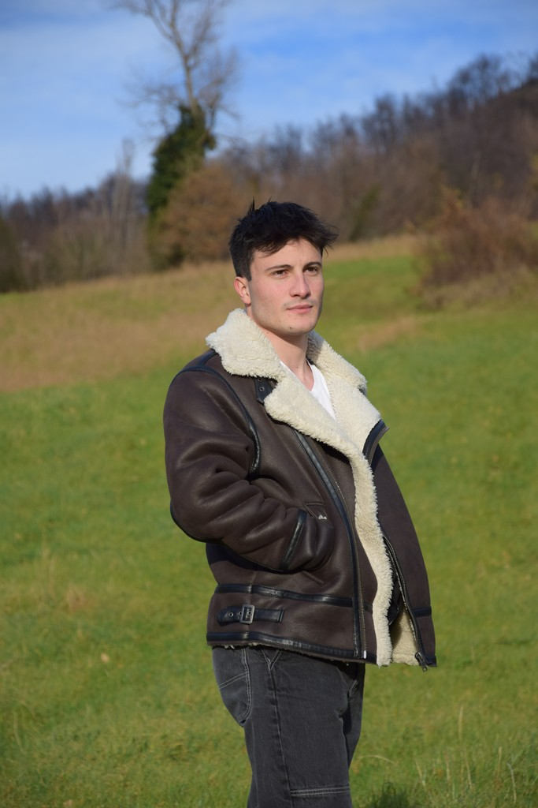


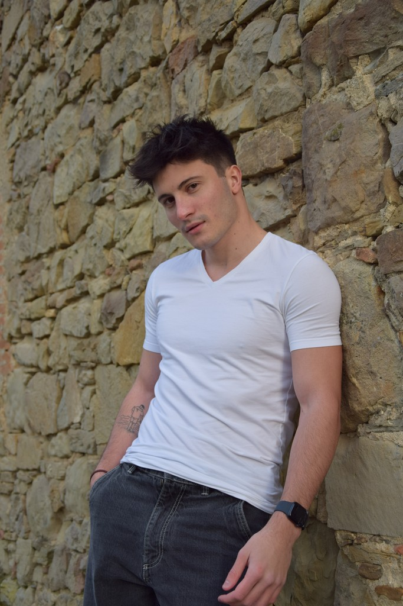


02 — Grafica
Graphic design
La grafica mi ha sempre affascinato. Locandine delle partite per la società sportiva APM e post editoriali per Dsgn.pop, la mia pagina Instagram sul design.
Scorri →
Locandine, caroselli e post editoriali, pubblicati ogni giorno su Dsgn.pop.
Segui @dsgn.pop

01/ 10
02/ 10

03/ 10

04/ 10

05/ 10

06/ 10

07/ 10

08/ 10

09/ 10

10/ 10
03 — Video editing
Costruito sul ritmo
Pensato per l’impatto visivo. Video brevi in cui tagli veloci, transizioni a tempo di musica e ritmo trasformano la prestazione in emozione.


Un video breve dedicato a Marcus Thuram: movimento atletico, presenza e carattere, trasformati in una storia visiva pensata per i social. Dove il movimento incontra l’identità.
04 — Siti web
Siti web
Due tirocini da Officina48: WordPress ed Elementor per aziende del territorio, poi un ruolo centrale su siti comunali e istituzionali, con chiarezza, facilità d’uso e affidabilità per la comunicazione pubblica.


05 — Chi sono
La mia storia
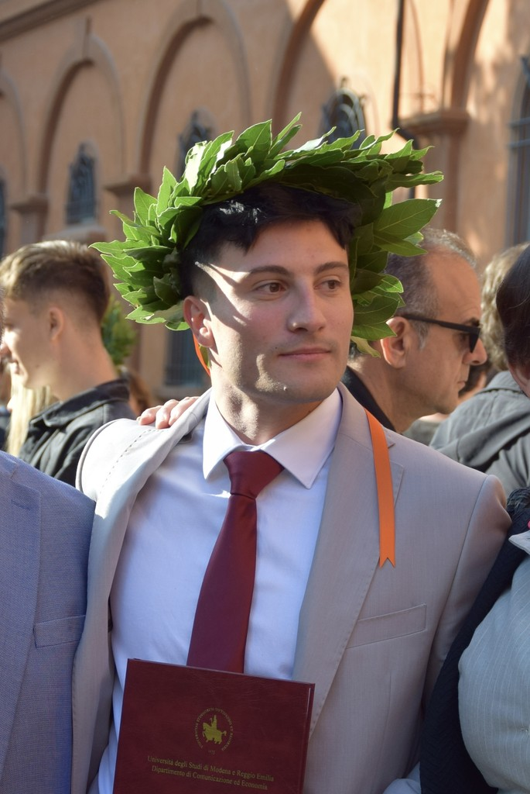
A 18 anni non sapevo cosa fare della mia vita. Sapevo solo che la tecnologia ne aveva sempre fatto parte, e probabilmente sarà sempre così.
- Università
Unimore, Digital Marketing
Dipartimento di Comunicazione ed Economia, Reggio Emilia. Tre anni di video editing, programmatic, graphic design, sviluppo web e strategia pubblicitaria. Ho capito cosa mi piace e, soprattutto, cosa no.
- Tirocini
Officina48 S.n.C.
Un vero flusso di lavoro creativo: contenuti, visual design e layout WordPress per aziende locali, poi i siti dei comuni del territorio.
- Oggi
Social Media Manager, APM
Seconda stagione con AtleticProgettoMontagna: foto delle partite, grafiche e contenuti social.
- Progetto personale
Dsgn.pop
La mia pagina Instagram sul design, dove continuo a esercitarmi in pubblico.
- Metodo
L’AI come aiuto
Uso l’intelligenza artificiale per semplificare e velocizzare il lavoro, mai per sostituire l’idea.
06 — Servizi
Come posso aiutarti
01
Shooting
- Servizi fotografici
- Post-produzione
- Consulenza per la pubblicazione
02
Design
- Locandine
- Interfacce
- Presentazioni
- Caroselli
03
Video editing
- Produzione video
- Post-produzione
- Consulenza per la pubblicazione
04
Siti web
- UX/UI design
- Figma & Framer
- WordPress
07 — Contatti
Hai un’idea che merita di essere realizzata? Trasformiamola in qualcosa che si fa notare. Sono aperto a collaborazioni, progetti freelance e idee coraggiose in cui design e strategia si incontrano.
Clicca per copiare · oppure apri l’app di posta
Barcelona